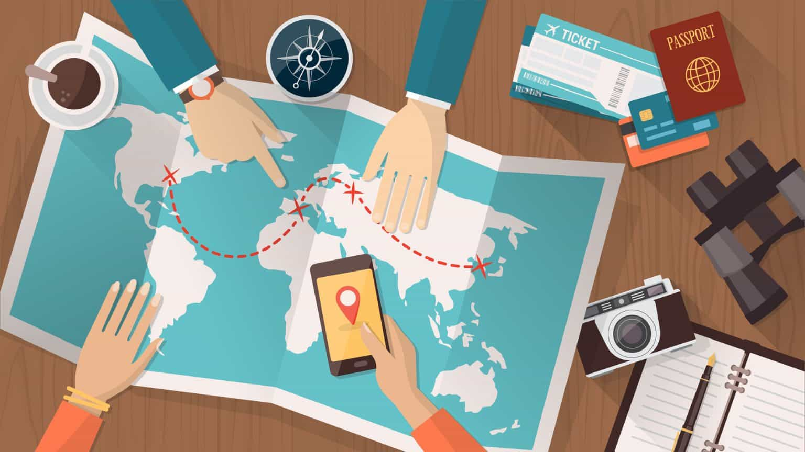

Check the Weather First
Before visiting Albay, it is best to check the weather forecast especially if you plan to visit beaches, mountains, or outdoor tourist spots. Good weather helps make your trip safer and more enjoyable.
- ✔ Best for outdoor activities
- ✔ Helps avoid travel delays
- ✔ Useful for planning your schedule

Wear Comfortable Clothes
Since Albay has many outdoor destinations, visitors should wear light and comfortable clothes. It is also a good idea to bring extra clothes, comfortable footwear, sunscreen, and a hat for protection from the sun.
- ✔ Comfortable for walking
- ✔ Good for warm weather
- ✔ Helps you travel easily
Bring Enough Cash
Some local stores, terminals, and small establishments may only accept cash, so it is helpful to bring enough money for food, transportation, entrance fees, and other expenses during your trip.
- ✔ Useful for small purchases
- ✔ Helps avoid payment problems
- ✔ Good for transportation fares

Plan Your Destinations
Albay has many attractions, so planning your destinations ahead of time can save effort and help you enjoy more places in one trip. It is better to group nearby tourist spots together when making your travel schedule.
- ✔ Saves time
- ✔ Makes travel easier
- ✔ Helps maximize your visit